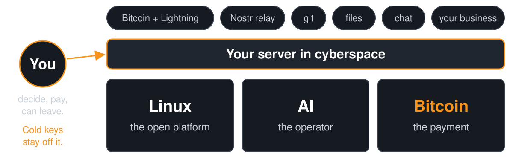
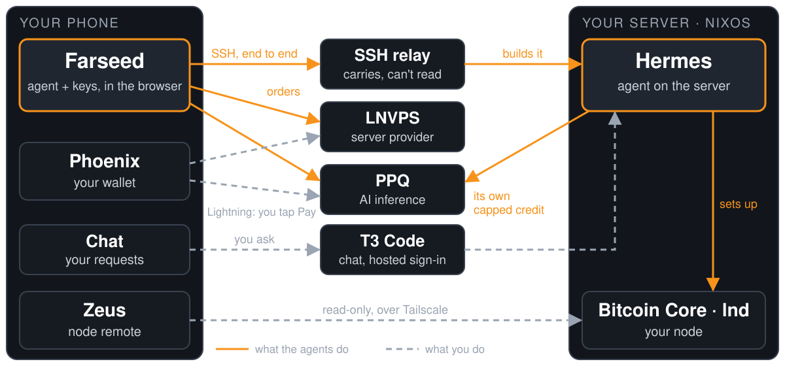

AI and Bitcoin: how they connect
Digital sovereignty from your pocket
A remote Linux server, operated by AI and paid for in bitcoin, is the missing piece of digital sovereignty.
An alpha proof of concept already starts one from a phone.
Mobility is freedom
No mobility
The peasant is always lacking in mobility. He is as attached to the ground as the plants he cultivates.
Franz Oppenheimer, The State (1908)
Physical mobility
… medieval towns that served as safe havens for serfs escaping feudal subjugation. Their role may prove analogous to the role of new jurisdictions in accommodating the coming exit from nation-states.
James Dale Davidson and William Rees-Mogg, The Sovereign Individual (1997)
Mobility in cyberspace
We must declare our virtual selves immune to your sovereignty, even as we continue to consent to your rule over our bodies.
John Perry Barlow, “A Declaration of the Independence of Cyberspace” (1996)
Mobility in cyberspace, today
Cyberspace is the new flag, arguably the most important one, which takes away the necessity of many earlier flags.
Katie The Russian, “Short The State”, Bitcoin Magazine (2022)
The gap Bitcoin left
Bitcoin made money mobile. What about the rest?
| Your… | …lives on someone else’s computer |
|---|---|
| Gmail, iCloud Mail | |
| Files, photos, phone backups | iCloud, Google Drive, Dropbox |
| Code | GitHub |
| Chat | iMessage, WhatsApp, Telegram |
| Coins, for many people | an exchange |
They can lock it, delete it, read most of it. Encryption hides the message, not the metadata.
Yours means you hold the keys and can leave on your own terms.
It was never the law. It was skill.

That barrier is falling.
What changed
AI is the sysadmin
“I’ve run Linux on desktops and servers for 25 years. AI is better at it than I am.”
You describe what you want. It does the rest, on an open platform.
You were already following instructions
A tutorial
- written for someone else’s machine
- can’t answer back
An AI
- explains each step
- adapts it to your machine
- checks the result
If you follow something, follow a frontier AI.
For keys and funds, still verify.
The proposal
Your server in cyberspace
At least one always-on remote Linux server. AI operates it. Bitcoin pays for it.

Why remote, and what it isn’t
| Threat | Home and laptop | Remote server |
|---|---|---|
| Home is raided | Lost | Survives |
| Devices seized at a border | Lost | Survives, if your seed is backed up |
| Provider reaches the machine | Not affected | Exposed |
| You change jurisdiction | Move yourself | Move the server |
Redundancy and a choice of jurisdiction, not immunity.
A VPS to learn. Bare metal for anything serious.
Cypherpunks write code
Farseed
An AI agent in your phone’s browser.

Alpha proof of concept · github.com/douglaz/farseed
Demo
What just happened

This run: DeepSeek V4.1-Flash through PPQ, on recipes I wrote. For open-ended work and hardening, use a frontier model.
What’s real and what isn’t yet
Said plainly
Real today
- end to end, from a phone
- I paid both invoices by hand
- Bitcoin node synced, Lightning node up
Not yet
- alpha, on one prepared path
- our own provider, a small VPS, a demo price
- recipes do most of the work
- Lightning node unfunded, no seed backup
Two objections
“Isn’t an online server unsafe?”
- Nothing is absolutely safe. Offline keys get stolen, coerced and lost.
- AI helps attackers too. It doesn’t break good cryptography.
- Not “put everything online”. Run what should be online, well.
“Isn’t rented AI giving up sovereignty?”
- The ideal: your own inference.
- Until then: pay-per-use, privacy-focused vendors.
- A frontier model hardening your setup beats a weak local one doing little.
Bootstrapping always starts on something you don’t control.
Start this month
If you use it
Rent one server. Pay in bitcoin. Let an AI help you run one service on it.
If you build it
We need more services that take Lightning and have an API an AI in a browser can call.
A remote Linux server, operated by AI and paid for in bitcoin, is the missing piece of digital sovereignty.
The stack, by name
| Role | Tool |
|---|---|
| Agent in the browser | Farseed (alpha, MIT/Apache-2.0) · github.com/douglaz/farseed |
| Agent on the server | Hermes Agent, by Nous Research |
| Chat front end | T3 Code |
| Inference, paid in Lightning | PPQ (PayPerQ), running DeepSeek V4.1-Flash |
| Server, paid in Lightning | LNVPS (our own instance, not lnvps.net) |
| SSH relay for the browser | paid-tcp-relay (MIT/Apache-2.0) · github.com/douglaz/paid-tcp-relay |
| Operating system | NixOS |
| Bitcoin and Lightning | Bitcoin Core, lnd |
| Phone wallet and node remote | Phoenix, Zeus |
| Private network | Tailscale |
Backup
Is a Lightning node safe? It’s a hot wallet.
- It is a hot wallet: the keys live on a machine that is online.
- Don’t fund the demo node: it has no seed backup, and its keys are on a VPS.
- On one you set up properly, with a seed you wrote down yourself, keep what you’d carry in your pocket.
- Don’t put much there until AI has helped you build the routine around it: CVE alerts, fast patching, backups.
- It is a big learning opportunity, for Bitcoin and for AI. Try it, cautiously.
- Decentralization still needs plebs running nodes. With AI, a pleb can run one at a semi-professional level.
Is Linux the best server OS in the age of AI?
- A fair, open question. Try the BSDs and anything new, especially formally verified work such as seL4. AI is opening possibilities.
- What I’ll never suggest is a proprietary system for what you run and hold your keys on. Black boxes will be broken.
- A supplier you can replace tomorrow is a different matter.
- On mobile: GrapheneOS, or something similar.
Where this could go
- A cosigning federation, so a key on a server can’t spend alone: github.com/douglaz/btc-policy-spec
- Provisioning as its own service: github.com/douglaz/provisiond
- More providers that take Lightning and can be driven from a browser.
Where are my keys in the browser?
- An encrypted journal in the browser’s private file system: AES-256-GCM, key derived from your passphrase with PBKDF2, 600,000 rounds.
- While unlocked, the keys sit in a background worker. The visible page never gets them, and it holds no wallet.
- Someone with your unlocked phone can use the app as you, but can’t read the keys out.
- A malicious extension could capture your passphrase as you type. Use a dedicated browser profile and a real passphrase.
Every browser obstacle
- Not every provider accepts Lightning, though many accept on-chain bitcoin.
- Many have no API to launch a machine, or only after a manual first launch.
- APIs without CORS headers can’t be called from a page.
- SSH needs a relay, so the host key must be known in advance.
- The page can’t pay: a human pays each invoice, on purpose.
- Mobile browsers suspend background tabs, so the agent must survive interruption.
What the demo still leans on
- Manual steps: paying two invoices, signing in to T3 Code once, approving one Tailscale sign-in.
- Third parties: PPQ for inference, the SSH relay we run, the hosted T3 Code sign-in, Tailscale.
- Worth keeping even after bootstrap: a hosted password manager, mail, a mesh VPN.